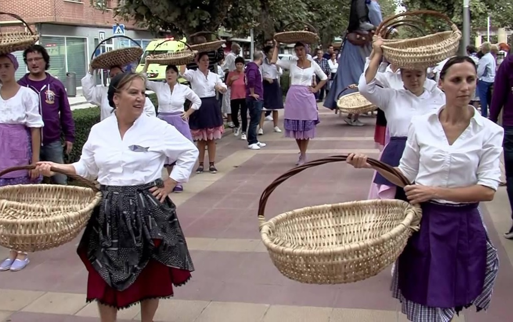

DidaktikApp

Las Sardineras
Una pregunta, si os pido que penséis qué harías si quisierais comprar pescado
¿cuál sería la respuesta? Igual lo primero que harías sería decirle a aita o ama, pero.. ¿No es cierto que lo más
probable es que fuerais a la pescadería? Pues hace muchos años tendrías que comprarle el pescado a aquellas
mujeres que se dedicaban a comprar el pescado que entraba en el puerto para luego venderlo en lugares cercanos. La
estatua que tenéis enfrente es la representación de ese oficio que hoy en día ya no existe. El paso del tiempo y
el desarrollo de medios más eficaces para la conservación y distribución de alimentos caducos hicieron que
desapareciera este comercio. Curioso, ¿verdad? Ahora escuchemos una de las canciones que se creó en homenaje a
estas mujeres, a ver si juntos podemos entender un poco mejor lo que hacían.